Refresh


C Major
C · E · G
key
mode
+ Highlight
Voicing: Default
articulation
Staccato
Sustain
Legato
Arpeggio
Rhythm
style
Up
Down
Pendulum
Strict
BPM
style
8-Beat
16-Beat
Waltz
Bossa Nova
Rock
Disco
Swing
Take Five
Kalamatianos
Shuffle
Sub
BPM
Chords
Vol
DEC
timbre
Sine
Square
Saw
Triangle
Harp
Vol
DEC
timbre
Sine
Square
Saw
Triangle
Piano
Vol
DEC
timbre
Sine
Square
Saw
Triangle
YOU ATE THAT
You didn't have a pen and paper. You got to the mic, you're like, oh, press record ah ah ah driver roll up the partition please.
Discard
Save MIDI